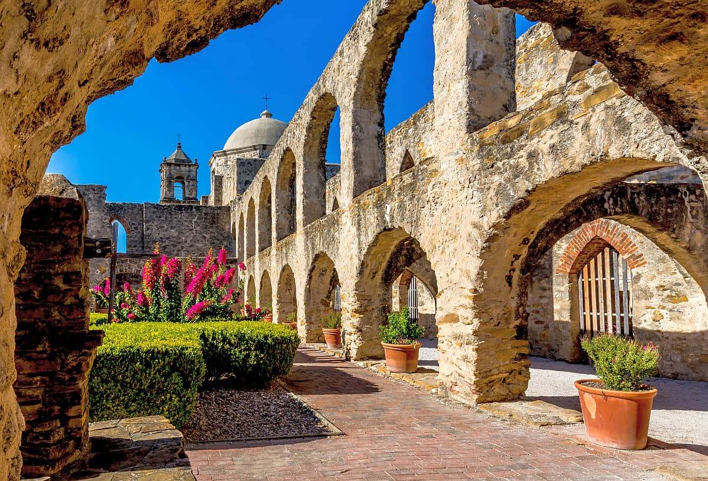

San Antonio Mission Historical Park, Getty Images
A brief history
Texas has a rich and diverse history that spans thousands of years. Here's a summarized version of its history:
Pre-colonization: Texas was home to numerous Native American tribes, including the Karankawa, Comanche, and Apache.
Spanish colonization (1519-1821): Spanish explorer Alonso Álvarez de Pineda mapped the Texas coast in 1519. In 1716, the Spanish established the first mission in East Texas, which led to the colonization of the area. Spain claimed Texas as a part of New Spain until Mexico gained independence in 1821.
Mexican period (1821-1836): After Mexico gained independence from Spain, Texas became a part of Mexico. American settlers began moving into Texas, and tensions grew between the Mexican government and the Texans. In 1835, the Texans declared their independence from Mexico and formed the Republic of Texas.
Republic of Texas (1836-1845): Texas became a sovereign nation in 1836 and remained so for nine years. During this time, the Texan government worked to establish a stable economy, develop infrastructure, and defend against Mexico. In 1845, Texas became the 28th state of the United States.
Civil War and Reconstruction (1861-1877): Texas joined the Confederacy during the Civil War and played a key role in the conflict. After the war, Texas went through a period of Reconstruction, during which the state was occupied by Union troops and the government worked to rebuild the state's economy and infrastructure.
Oil boom (early 1900s): In the early 20th century, Texas became a major producer of oil, which transformed the state's economy and led to the development of major cities like Houston and Dallas
Civil rights movement (1950s-1960s): Texas played a significant role in the civil rights movement, with major figures like Martin Luther King Jr. and Cesar Chavez leading protests and organizing for change.
Modern era (1970s-present): Today, Texas is one of the largest and most populous states in the United States, with a diverse economy that includes agriculture, energy, technology, and manufacturing. The state has a rich cultural heritage that includes cowboy culture, Tex-Mex cuisine, and a thriving music scene.